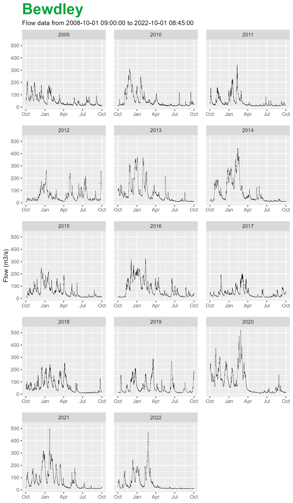
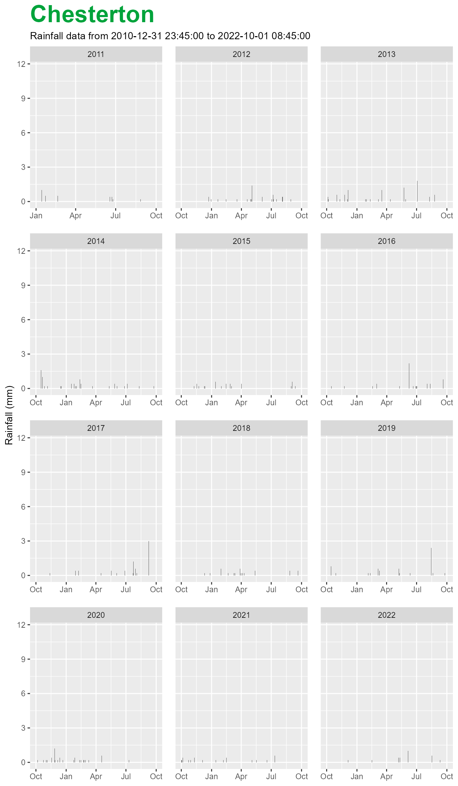
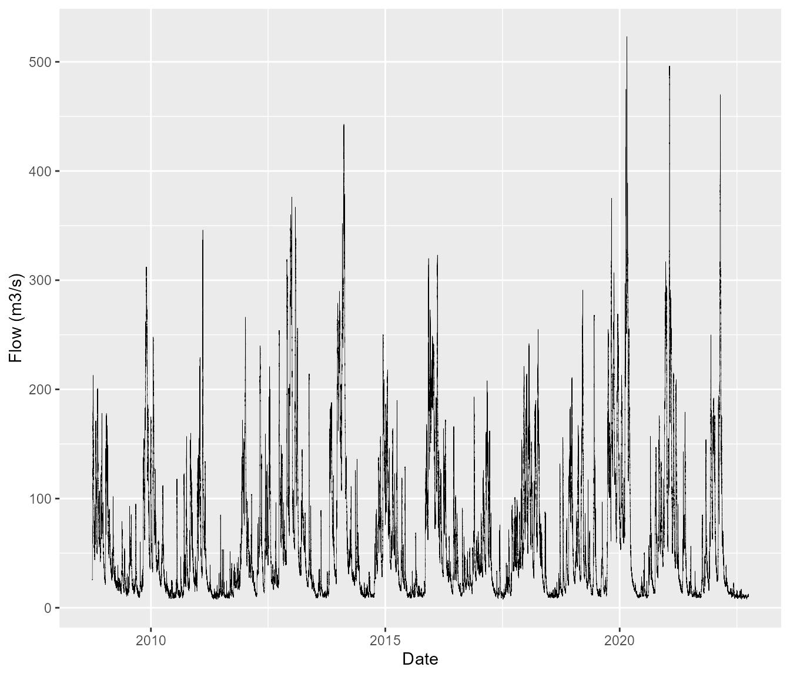
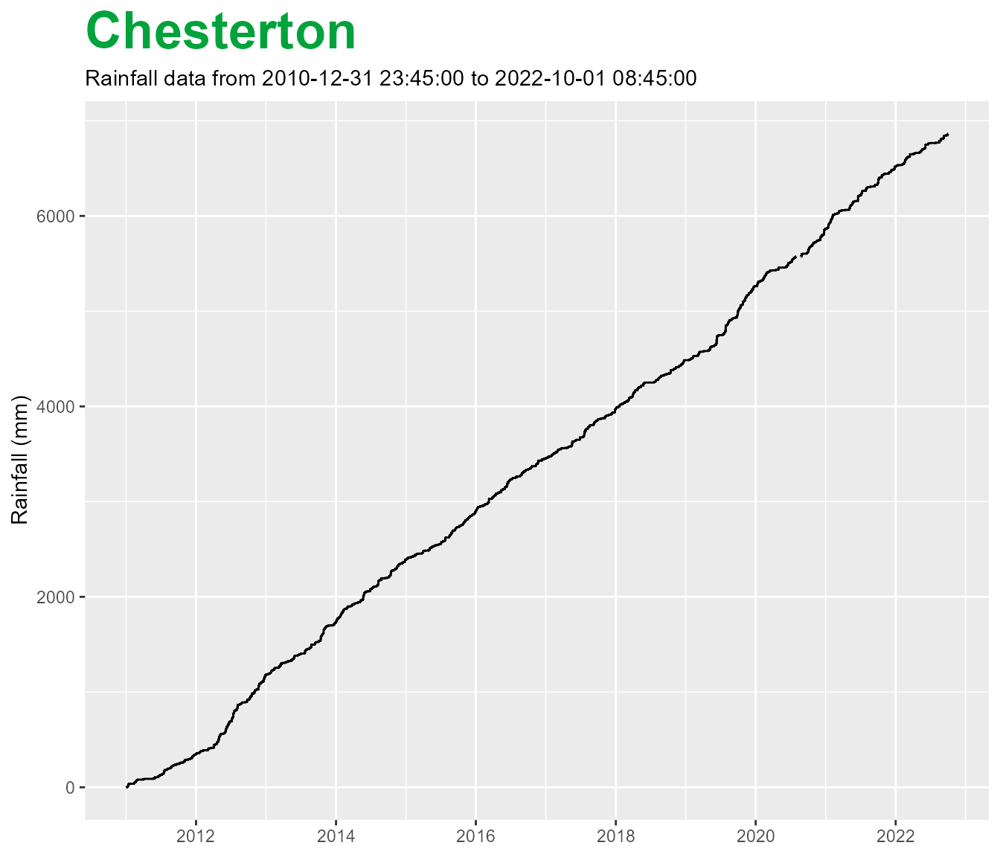
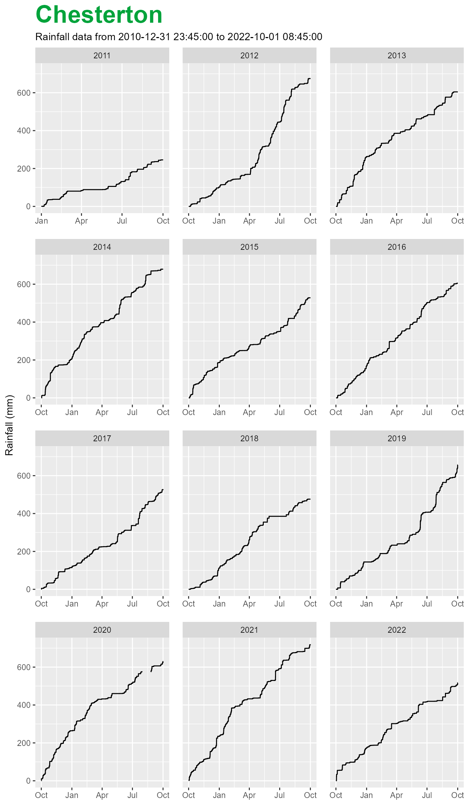
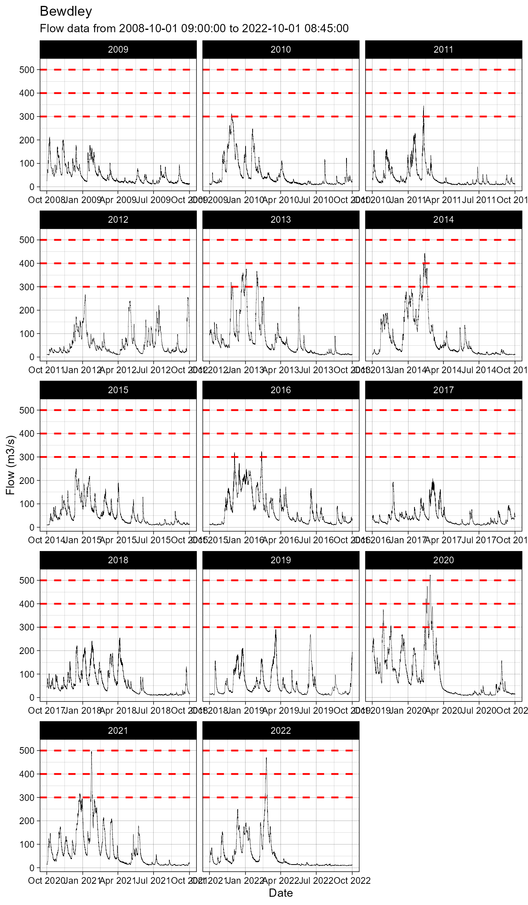
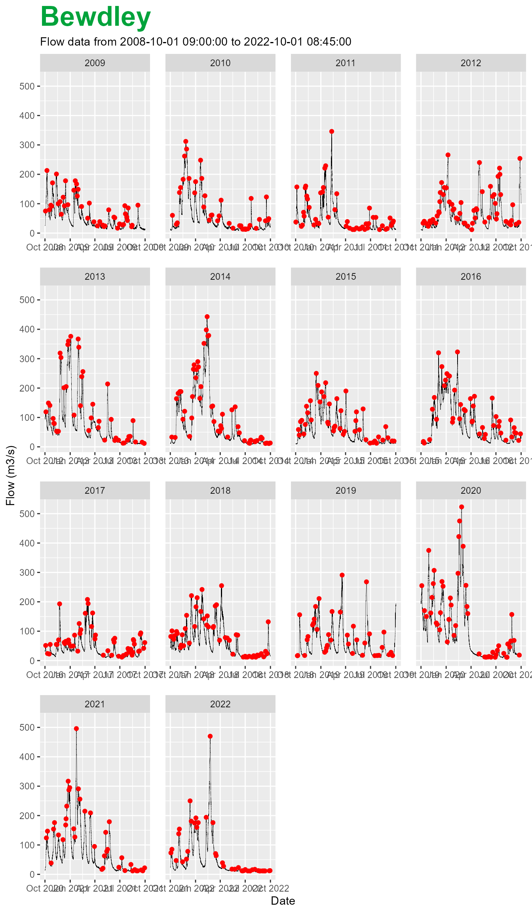

Introduction to data visualisation in riskyData
Plotting with riskyData!
The package riskyData has very simple methods for
plotting hydrometric data, simply use the $plot() function.
The metadata that is associated with the imported data will quickly
specify the types of plots required. This limits the amount of
additional arguments required.
All plots are generated with ggplot2. This is an implementation of
Leland Wilkinson’s Grammar of Graphics — a general scheme for data
visualization which breaks up graphs into semantic components such as
scales and layers and are stored in a list. Their positions in the list
determine the plotting order when generating the graphical output.
ggplot2 serves as a replacement for the base graphics and contains a
number of defaults for web and print display of common scales. A
critical element of riskyData is the OOP that underpins the
package, using ggplot further adds to this functionality as plotting
objects can be stored and modified, rather than direct exporting.
Plots are currently associated with the formats useful for E&R forecasting, additional themes will be added soon.
Loading the data
For the purpose of this we will import the Bewdley flow and Chesterton rain gauge data sets
All plotting is organised around hydrological years. Use the
$hydroYearDay() function in any pipelines.
## Load data
data(bewdley)
data(chesterton)
## Convert to hydrological year and day
bewdley$hydroYearDay()
#> ℹ Calculating hydrological year and day✔ Calculating hydrological year and day [8.2s][39m
chesterton$hydroYearDay()
#> ℹ Calculating hydrological year and day✔ Calculating hydrological year and day [7.4s][39mStandard plots
For flow and level stations, when you apply the $plot()
function the plots are faceted by hydrological year and default to a
line based geometry.
bewdley$plot()
For rainfall stations, when you apply the $plot()
function the plots are also faceted by hydrological year but default to
a column based geometry.
chesterton$plot()
Viewing the whole series
For all types of gauges, you can view an unfaceted plot if you apply the wrap argument as FALSE. The basic geometries of lines for level and flow plots and bars/columns for rainfall sites will be retained.
If you wish to remove the title, set the title argument to FALSE.
bewdley$plot(wrap = FALSE,
title = FALSE)
Cumulative rainfall
It is sometimes useful to view rainfall using a cumulative sum. With
riskyData these can be applied unwrapped or wrapped. If
wrap is set as TRUE, the cumulative plots are calculated for each
hydrological year.
To set a cumulative plot set cumul to TRUE.
chesterton$plot(wrap = FALSE,
cumul = TRUE)
To calculate and plot cumulative rainfall by hydrological year set wrap to TRUE.
chesterton$plot(wrap = TRUE,
cumul = TRUE)
Customising your plots
As the plots can be stored as objects, this enables us to add extra information to them. As mentioned above the objects are stored as lists, to add extra details we can modify the objects as you would any other ggplot2 object.
In the example below I want to add threshold lines to the bewdley flow data that is not faceted. Additionally I wish to set the theme to linedraw and facet the plot so that there are 4 columns.
## Set threshold examples
thresholds <- c(300, 400, 500)
## Store plot as object
plot <- bewdley$plot(wrap = FALSE)
## Modify plot
plot + geom_hline(yintercept = thresholds,
colour = 'red',
linetype = 'dashed',
linewidth = 0.8) +
facet_wrap(~hydroYear,
scales = 'free_x',
ncol = 3) +
theme_linedraw()
If we wished to plot the peaks detected by the
$findPeaks() function.
bewdley$findPeaks()
# Calculate hydrological year and day of peaks - used in faceting
bewdley$peaks <- data.table::data.table(bewdley$peaks,
hydroYearDay(bewdley$peaks))
plot <- bewdley$plot(wrap = FALSE)
plot + geom_point(data = bewdley$peaks,
inherit.aes = FALSE,
aes(x = dateTime, y = value),
colour = 'red') +
facet_wrap(~hydroYear, scales = 'free_x')